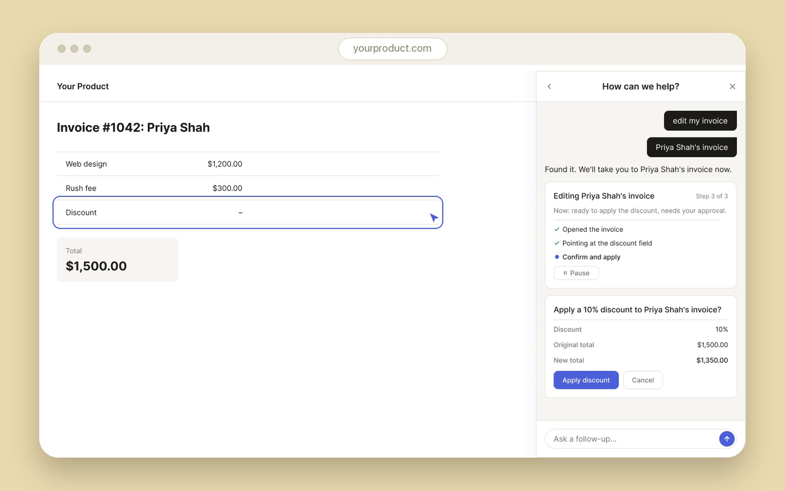
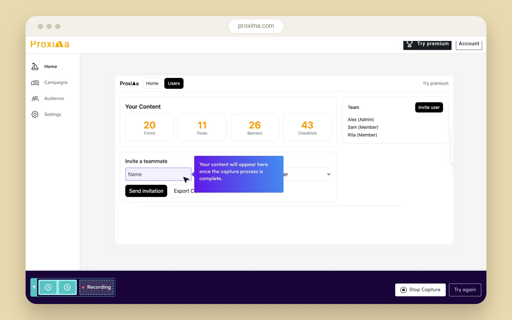
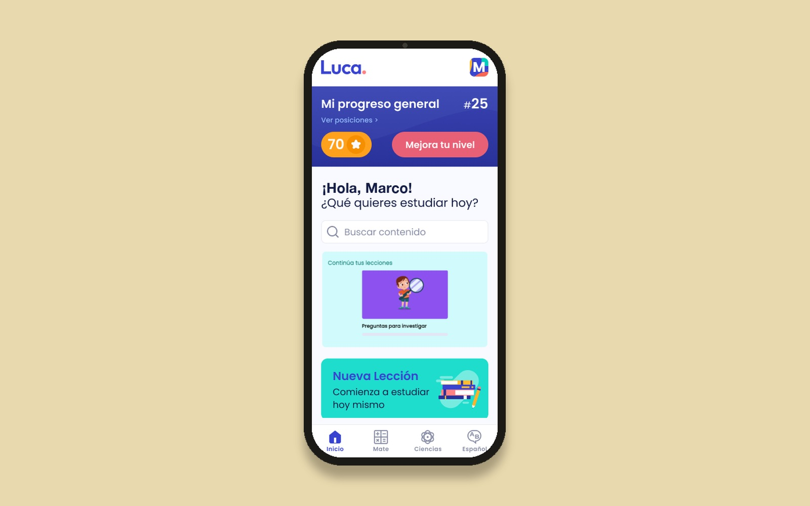
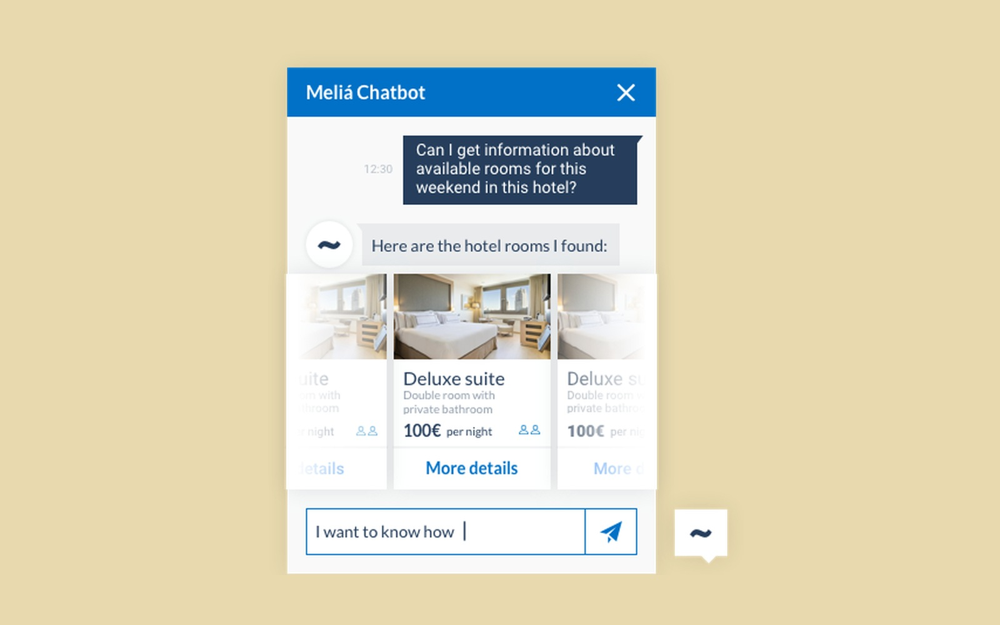
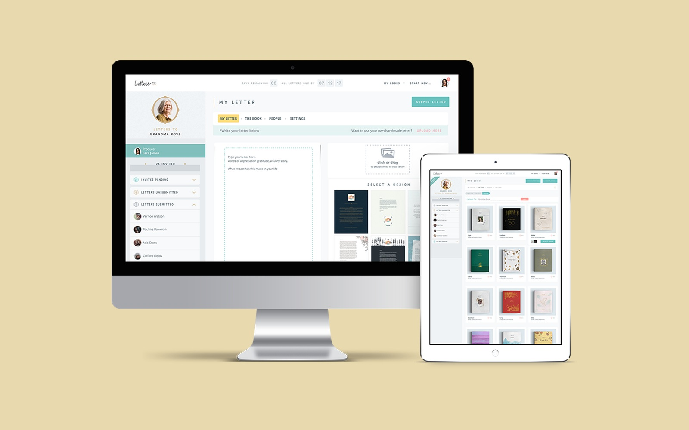

Product Designer · AI-Era Practice
I'm the human in the loop your AI-built product is missing.
Product designer with 10+ years of experience, including designing the human-in-the-loop layer of a live AI agent product, and using AI daily in my own practice today. If your team built fast with AI and the UX shows it, I find what's broken and fix it.
The gap
A lot of AI-built products are quietly broken.
Founders and CTOs can now ship a working product with Claude or another AI tool, without ever bringing in a product designer. Fast, cheap, and it works. Until users get confused, drop off, or a demo doesn't land. That gap is where I come in.
How I help
A Product UX Audit, built on real research.
-
01
Research
I learn your product, your users, and your competition before forming any opinion.
-
02
Audit
I diagnose what's actually broken across UI, personas, journeys, or onboarding, and rank it by severity.
-
03
Proposal
A fixed-scope roadmap you approve before anything gets built.
One clear report. No guessing what to fix first.
See pricing & scope →Selected work
Five products. Five different kinds of proof.

Dubot
Designing the human-in-the-loop layer of an AI agent product, validated through structured interview research with prospective and pilot customers.
Read the case study →
Candu
Turned a 30–60 minute manual workflow into a 5-minute AI-driven one, and I use AI the same way to run my own design practice.
Read the case study →
Luca
Built a real discovery practice from scratch (interviews, opportunity trees, and a data-scientist partnership) at an edtech platform.
Read the case study →
Meliá
Took a hotel chain from zero voice assistant to production, in the room with their team, before the AI boom made this trendy.
Read the case study →
LettersTo
Flown to San Francisco to lead a team of up to 8, building a physical/digital product from nothing.
Read the case study →How I work
I design with AI every day, not just for AI products.
At Candu, I design working alongside Claude as a collaborator every day. The same judgment I bring to reviewing what AI generates for my own product is what I bring to auditing yours.
Looking to hire a full-time or contract product designer instead?
See my experience →